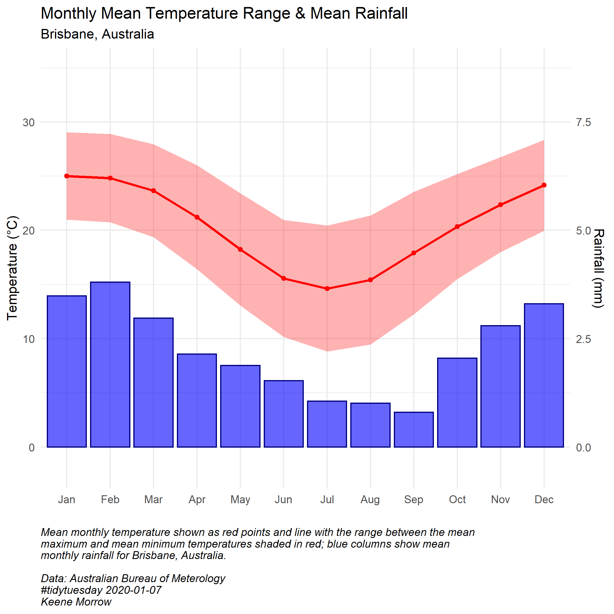
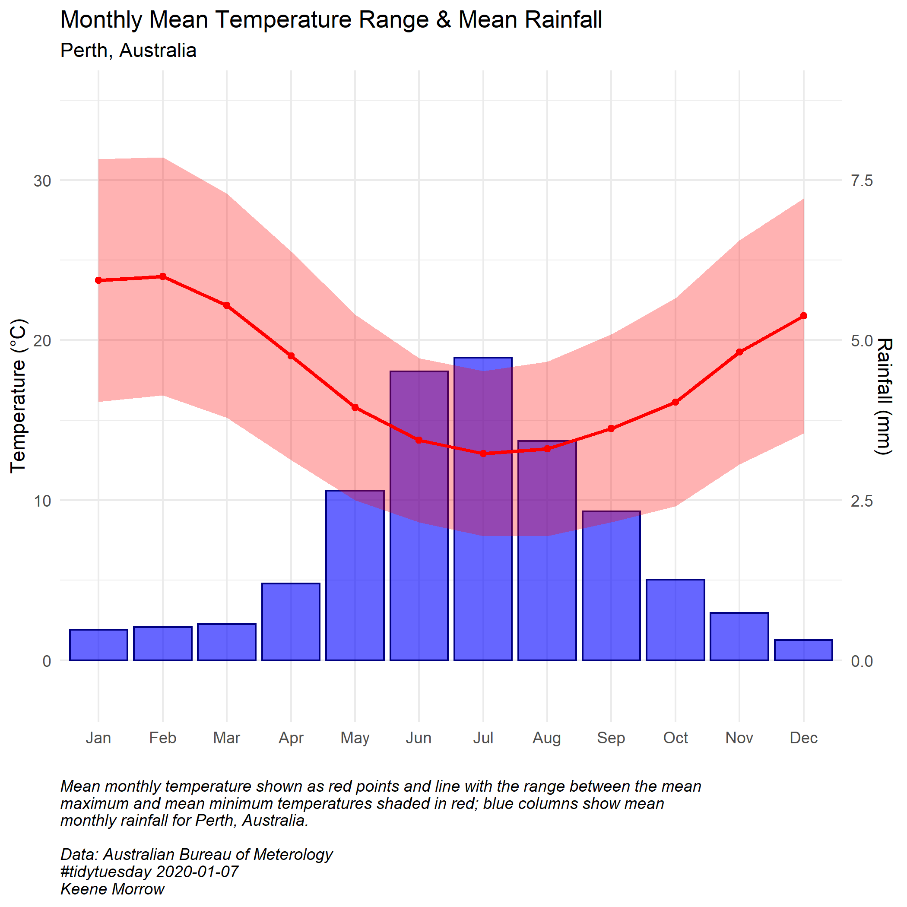

Australia's Climate
 Martin Ollman, BBC 2020
Martin Ollman, BBC 2020
At the end of 2019 and beginning of 2020, Australia experienced devastating bushfires. More than 11 million hectares burned, principally in the southeast provinces of New South Wales and Victoria. Only thirty-three people lost their lives, but more than a billion animals are estimated to have been killed, including on Kangaroo Island, a haven for biological diversity.
The current government of Australia shies away from connecting the intensity of the bushfires to climate change or acknowledging the intense impacts of climate change on the country. CLimate scientists, on the othe rhand, agree that the extremely high temperatures and severe drought that fueled the bushfires are undoubtably linked to climate change. (BBC)
In light of the devastation of these fires, the R For Data Science #tidytuesday prompt for 01-07-2020 included data on the fires and the climate of Australia. Here, temperature and rainfall data are used to construct climatology graphs for five Australian cities: Brisbane, Canberra, Melbourne, Perth, and Sydney.
Set Up
library(tidyverse)
library(lubridate)
library(here)Read Data
rainfall <- readr::read_csv('https://raw.githubusercontent.com/rfordatascience/tidytuesday/master/data/2020/2020-01-07/rainfall.csv')
temperature <- readr::read_csv('https://raw.githubusercontent.com/rfordatascience/tidytuesday/master/data/2020/2020-01-07/temperature.csv')Wrangling
Rainfall
rain_date <- rainfall %>%
mutate(date_new = lubridate::ymd(paste(year, month, day, sep = "-"))) %>% # concatenate dates and make them Date type
mutate(month = as.numeric(month)) %>% # prep months for applying names
mutate(month_name = month.abb[month]) %>% # apply names to months
mutate(month_name = fct_relevel(month_name, levels = month.abb)) # relevel to get month names in orderTemperature
temp <- temperature %>%
mutate(city_name = str_to_title(city_name)) %>% #clean up city names (BRISBANE to Brisbane)
mutate(month = lubridate::month(date)) %>% # pull month from date
mutate(month_name = month.abb[month]) %>% # apply names to months
mutate(month_name = fct_relevel(month_name, levels = month.abb)) %>% # relevel month names
mutate(year = lubridate::year(date))Prep Data for Constructing Climatologies
temp_summary <- temp %>%
drop_na() %>% # this probably isn't a good idea, but let's assume that the loss of data is evenly distributed throughout the time range and doesn't impact the mean monthly temperature
group_by(city_name, month_name, temp_type) %>%
summarize(mean_temp = mean(temperature)) %>%
pivot_wider(names_from = temp_type, values_from = mean_temp, names_prefix = "mean_temp_")
rain_summary <- rain_date %>%
mutate(rain_0 = ifelse(is.na(rainfall), 0, rainfall)) %>% # another questionable assumption
group_by(city_name, month_name) %>%
summarize(mean_rainfall = mean(rain_0))
climate_mean <- merge(temp_summary, rain_summary)
cities <- unique(climate_mean$city_name) # gets list of the common cities from the mergePlotting Climatologies
# Plot one climatology per city with both temperature and rainfall data (missing some sloppily removed before)
for(i in seq_along(cities)){
# plot data for each city common between the temperature and rainfall data
ggplot(data = subset(climate_mean, climate_mean$city_name == cities[i])) +
# blue columns for rainfall
geom_col(aes(x = month_name,
y = mean_rainfall*4), # adjustment to make the scales work together
color = "navy", fill = "blue", alpha = "0.6") +
# red ribbon for area between mean max temp and mean min temp
geom_ribbon(aes(x = month_name,
ymax = mean_temp_max,
ymin = mean_temp_min, group = 1),
fill = "red",
alpha = 0.3) +
# red line and points for mean temeprature as mean of mean max and min temp
geom_line(aes(x = month_name,
y = ((mean_temp_max + mean_temp_min)/2),
group = 1),
color = "red",
size = 1) +
geom_point(aes(x = month_name,
y = ((mean_temp_max + mean_temp_min)/2)),
color = "red") +
# scale wrangling
scale_y_continuous(limits = c(-2, 35), # keeps scales consistent across plots
sec.axis = sec_axis(~./4, name = "Rainfall (mm)")) + # adds second axis for rainfall, adjusted to counteract the scale factor above
scale_colour_manual(values = c("blue", "red")) +
labs(y = "Temperature (°C)",
x = "",
title = "Monthly Mean Temperature Range & Mean Rainfall",
# subtitle of plot based on city in question
subtitle = paste(cities[i],", Australia", sep = ""),
caption = paste("Mean monthly temperature shown as red points and line with the range between the mean\nmaximum and mean minimum temperatures shaded in red; blue columns show mean\nmonthly rainfall for ", cities[i], ", Australia.\n\nData: Australian Bureau of Meterology\n#tidytuesday 2020-01-07\nKeene Morrow",
sep = "")) +
theme_minimal() +
theme(plot.caption = element_text(hjust = 0, face = "italic"))
ggsave(here::here("figures", paste(cities[i], "_climate.png", sep = "")),
height = 7, width = 7)
}



Summary
- Wrangled dates with
lubridate. - Made some questionable assumptions about NA’s in the data.
- Used
forloop to generate five plots of climatologies, one for each of the cities with data for both temperature and rainfall.
References
“Australia Fires.” #tidytuesday, R for Data Science. https://github.com/rfordatascience/tidytuesday/tree/master/data/2020/2020-01-07
“Australia fires: A visual guide to the bushfire crisis.” British Broadcasting Company. 01-31-2020. https://www.bbc.com/news/world-australia-50951043
“Climate Data Online.” Australian Bureau of Meterology. http://www.bom.gov.au/climate/data/
Ghosh, Pallab. “Climate change boosted Australia bushfire risk by at least 30%.” British Broadcasting Company, 03-04-2020. https://www.bbc.com/news/science-environment-51742646
Gill, Victoria. “Australia fires were far worse than any prediction.” British Broadcasting Company. 02-24-2020. https://www.bbc.com/news/science-environment-51590080?intlink_from_url=https://www.bbc.com/news/topics/c2wlvy54gd1t/australia-fires&link_location=live-reporting-story
Keene Morrow
Graduate Student
My interests include geospatial analysis, environmental data science, and strategic communication.